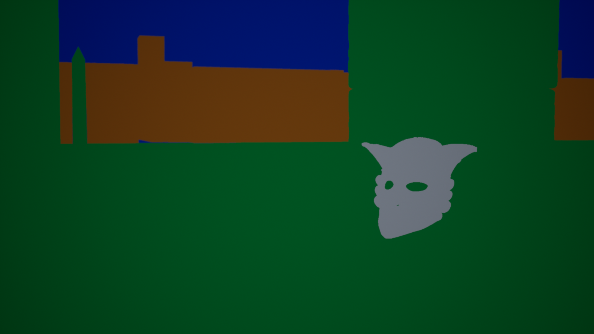
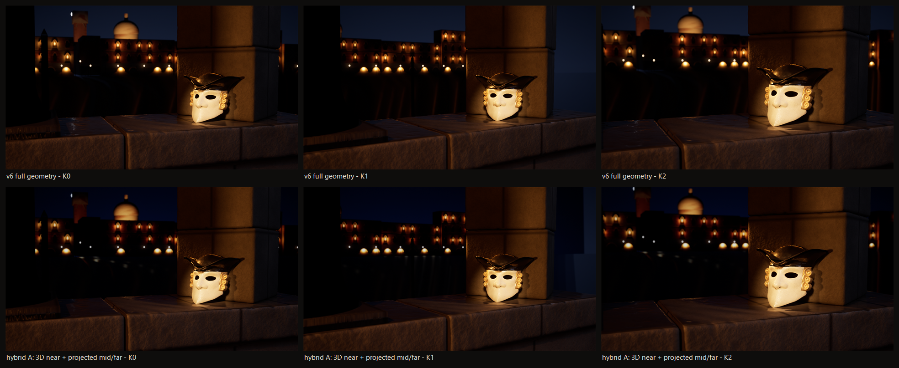
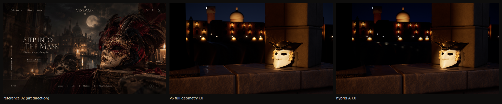
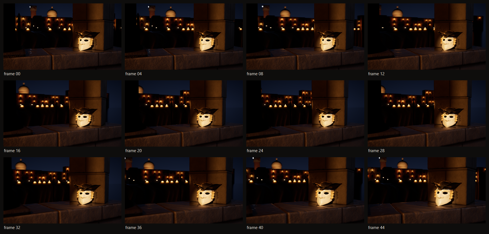
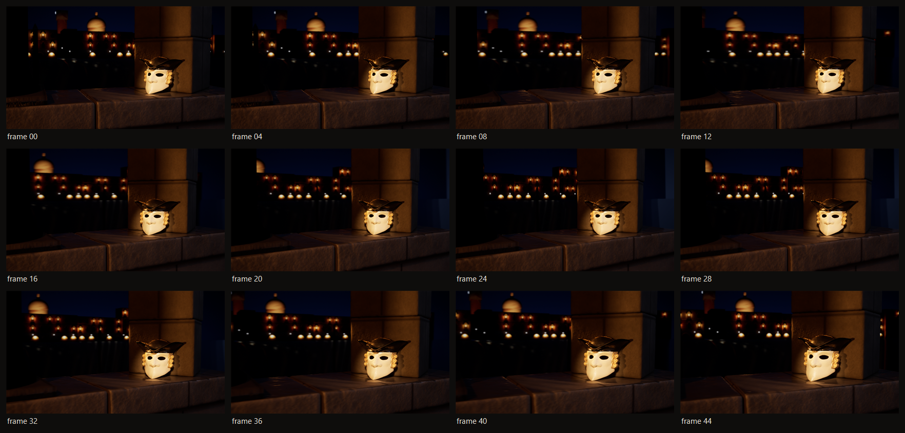
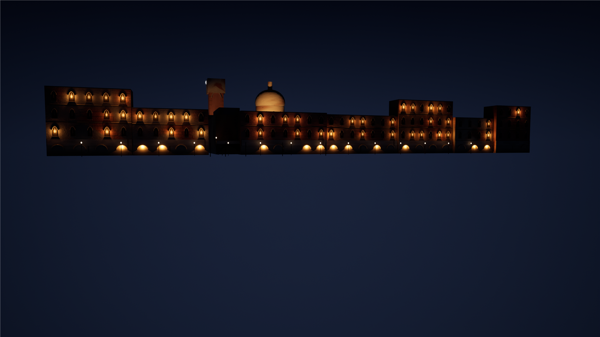
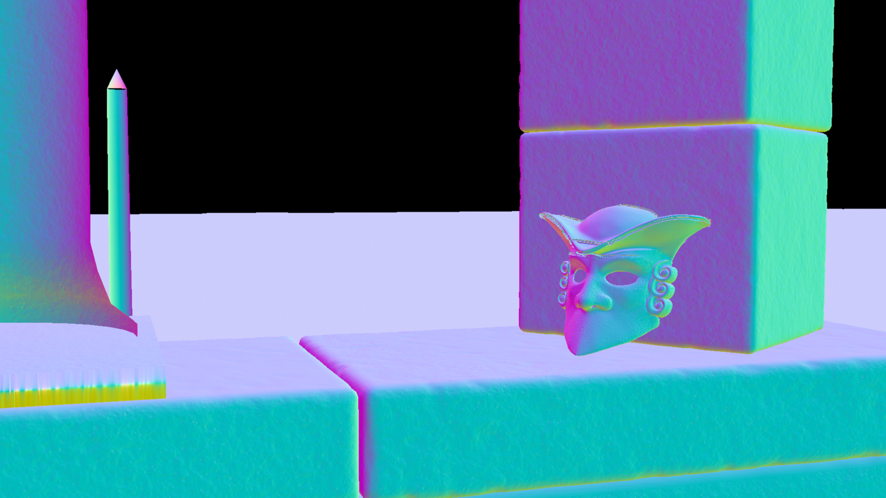

VENEMASK — Gate A-HYBRID
29 Ekim 2026 · v6 üzerine · UE 5.8.1 Path Tracer · aynı Casanova STL, aynı ışık, aynı 42 mm f/6.3 kamera
DENEY A boru hattı: PASS · K1: FAILDENEY B: BLOCKEDGATE A: FAIL (devam)
1 · Sahne katman haritası

2 · K0 / K1 / K2 — v6 tam geometri (üst) ↔ hibrit A (alt)


3 · Kamera hareketi K0 → K1 → K2 (48 kare)
Kare kare karşılaştırma: camera_test.html (kaydırıcı; kareler LOCAL ONLY). Kontak sayfaları:


4 · Plaka ve projeksiyon


5 · Kontrol
| Madde | Durum | Kanıt |
|---|---|---|
| Ürün geometrisi / boya / örgü geometrisi (her pozda) | PASS | aynı aktör; stills K0/K1/K2 |
| Örgü iplik PBR, craquelure deseni | UNVERIFIED | v6 ile aynı |
| Projeksiyon K0 eşdeğerliği | PASS | compare_K012 üst/alt K0 |
| Occlusion / su yansıması (proxy emissive) | PASS | hibrit K0, K2 |
| K1 yan hareket | FAIL | proxy yan yüzü, sağ üst |
| K2 dolly-in | PASS | dikiş yok |
| Görsel kalite sıçraması | YOK | plaka v6'dan; harici matte BLOCKED |
| World Labs Marble | BLOCKED | export + ticari hak Pro plan; hesap/ödeme yok |
6 · Ürün fiyatı (düzeltme)
124.99 USD (US/DE/GB pazarı) · 3799.00 TRY (Türkiye pazarı, kur 50.58) · mağaza temel para birimi USD · id 7591523549267 · SKU 17629779130_3E08 · kontrol 2026-10-29 15:25 UTC. Fiyat Unreal görseline yazılmadı; mağaza kaydı değiştirilmedi.